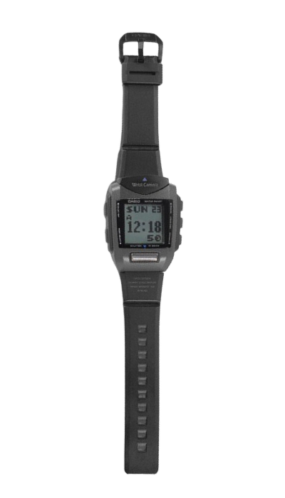
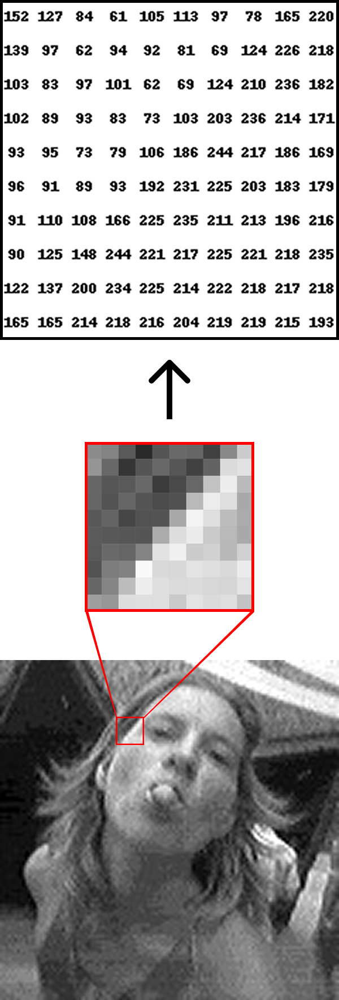
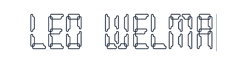

Casio wrist camera

- World’s first wristwatch
equipped with a digital camera - Released in the year 2000
- Built-in 1MB memory (100 images)
- Resolution: 120 x 120 Pixels
- Data transfer through Infrared
- F2.8 fixed; f = 1.1mm lens
- 1/14 inch monochrome CMOS sensor
The second version (2001) came in different colors
Image resolution
The resolution of the Casio wrist camera is 0.01 Megapixels!
Fortunately, the screen is very small, so the DPI is at 154.
Share pictures with your friends!


- The watch pictures are great for ML classification exercises
- The low resolution means less to process
- And it’s grayscale! Only one channel, even less to process!
K-Nearest Neighbors…
… is one of the simplest classification methods and relies on distances to defined points. Examples of distance measures:
\[ \begin{aligned} \text{Manhattan:}\quad d_{1}(I_{1}, I_{2}) &= \sum_{p}\left|\, I_{1}^{p} - I_{2}^{p} \,\right| \\ \\ \text{Euclidean:}\quad d_{2}(I_{1}, I_{2}) &= \sqrt{\sum_{p}\left( I_{1}^{p} - I_{2}^{p} \right)^{2}} \end{aligned} \]
Squared Euclidean distance in R
sq_euclidean <- function(A, B) {
n <- nrow(A) # number of rows data
k <- nrow(B) # number of centroids
d <- ncol(A) # number of variables
D2 <- matrix(0, nrow = n, ncol = k) # initialize matrix for squared distances
for (i in 1:n) { # loop over all rows in the data
for (j in 1:k) { # loop over all centroids
s <- 0 # initialize sum of squared differences
for (p in 1:d) { # loop over each variable
diff <- A[i, p] - B[j, p] # compute differences between points and centers
s <- s + diff * diff # add squared difference
}
D2[i, j] <- s # store squared difference in matrix
}}
D2}References
Hastie, Trevor. 2009. “The Elements of Statistical Learning: Data Mining, Inference, and Prediction.” Springer.
